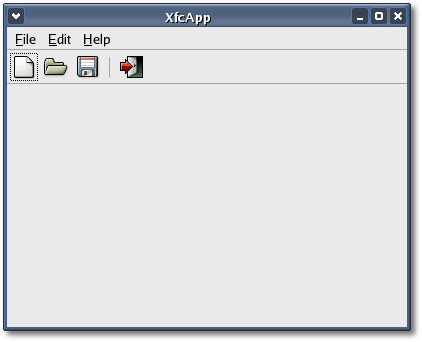

|
Chapter
4: Adding a menubar and toolbar
The easiest way to add a menubar and toolbar(s) to an application is to
use
the Gtk::UIManager interface. First create a set of application
specific actions and then use an instance of Gtk::UIManager to
create the menubar and toolbar(s) using those actions, from an XML
description. The advantage of Gtk::UIManager is that it makes it easier
to coordinate using the same item in a menu and a toolbar, and it
simplifies the implementation of toolbar editing.
So lets add an action-based menubar and toolbar to the XfcApp
program. First we need to add an application instance of Gtk::UIManager
and
Gtk::ActionGroup. Usually an application has only one instance of
Gtk::UIManager but it can have several action groups. Action groups are
a good way to group similar actions together, however, in XfcApp we
will use only one. Gtk::UIManager and Gtk::ActionGroup derive directly
from G::Object so they are created with a reference count of one that
must be unreferenced. The easiest way to manage reference counting in
XFC is to use a smart pointer.
To the class declaration in <xfcapp.hh> we need to add two
private smart
pointers, one for the user interface manager and one for the action
group:
Pointer<Gtk::ActionGroup>
group;
Pointer<Gtk::UIManager> manager;
and for convenience, we need to declare a private add_actions() method
to create all
the
actions:
void add_actions();
and lastly, we need to declare eleven public methods, one for each
action
type XfcApp will use:
void on_file_new();
void
on_file_open();
void
on_file_save();
void
on_file_save_as();
void
on_file_quit();
void on_edit_cut();
void on_edit_copy();
void on_edit_paste();
void on_edit_clear();
void on_edit_preferences();
void
on_help_about();
Your <xfcapp.hh> header file should now look like this:
#include <xfc/main.hh>
#include <xfc/gtk/window.hh>
#include <xfc/gtk/uimanager.hh>
using namespace Xfc;
class XfcApp : public Gtk::Window
{
Pointer<Gtk::ActionGroup> action_group;
Pointer<Gtk::UIManager> manager;
void add_actions();
public:
XfcApp();
virtual ~XfcApp();
void on_file_new();
void on_file_open();
void on_file_save();
void on_file_save_as();
void on_file_quit();
void on_edit_cut();
void on_edit_copy();
void on_edit_paste();
void on_edit_clear();
void on_edit_preferences();
void on_help_about();
};
The UI definitons that XfcApp will use are very simple
and are defined as a string in <xfcapp.ui>:
static const char *ui_info =
"<ui>"
" <menubar name='MenuBar'>"
" <menu action='FileMenu'>"
" <menuitem action='New'/>"
" <menuitem action='Open'/>"
" <menuitem action='Save'/>"
" <menuitem action='SaveAs'/>"
" <separator/>"
" <menuitem action='Quit'/>"
" </menu>"
" <menu action='EditMenu'>"
" <menuitem action='Cut'/>"
" <menuitem action='Copy'/>"
" <menuitem action='Paste'/>"
" <menuitem action='Clear'/>"
" <separator/>"
" <menuitem action='Preferences'/>"
" </menu>"
" <menu action='HelpMenu'>"
" <menuitem action='About'/>"
" </menu>"
" </menubar>"
" <toolbar name='ToolBar'>"
" <toolitem action='New'/>"
" <toolitem action='Open'/>"
" <toolitem action='Save'/>"
" <separator/>"
" <toolitem action='Quit'/>"
" </toolbar>"
"</ui>";
Our menubar has three submenus: File, Edit and Help. The file menu has
six
menu items: New, Open, Save, Save As, Quit and a separator. The edit
menu has six menu items: Cut, Copy, Paste, Clear, Preferences and a
separator. The help
menu has only one menu item: About. The toolbar has five tool
items: New, Open, Save, Quit and a separator.
The constructor for the first XfcApp application was very small and
only called one function, set_title(). Now we need to add the code that
will implement our UI description. First we create the UI action group
and give it an
arbitrary name. An application
can use more than one action group but XfcApp will use only one.
action_group = new
Gtk::ActionGroup("XfcAppActions");
add_actions();
XfcAppActions
is the name used to identify the action group. add_actions() is a
convenience method that is used to create the
application's actions. It looks like this:
void
XfcApp::add_actions()
{
using namespace Gtk;
using namespace sigc;
action_group->add("FileMenu", "_File");
action_group->add("EditMenu", "_Edit");
action_group->add("HelpMenu", "_Help");
Action *action = action_group->add("New", "_New",
StockId::NEW, AccelKey("<control>N"), "Create a new
file");
action->signal_activate().connect(mem_fun(this,
&XfcApp::on_file_new));
action = action_group->add("Open", "_Open",
StockId::OPEN, AccelKey("<control>O"), "Open a
file");
action->signal_activate().connect(mem_fun(this,
&XfcApp::on_file_open));
action = action_group->add("Save", "_Save",
StockId::SAVE, AccelKey("<control>S"), "Save current
file");
action->signal_activate().connect(mem_fun(this,
&XfcApp::on_file_save));
action = action_group->add("SaveAs", "Save
_As...", StockId::SAVE, "Save to a file");
action->signal_activate().connect(mem_fun(this,
&XfcApp::on_file_save_as));
action = action_group->add("Quit", "_Quit",
StockId::QUIT, AccelKey("<control>Q"), "Quit");
action->signal_activate().connect(mem_fun(this,
&XfcApp::on_file_quit));
action = action_group->add("Cut", "C_ut",
StockId::CUT, AccelKey("<control>X"), "Cut the
selection");
action->signal_activate().connect(mem_fun(this,
&XfcApp::on_edit_cut));
action = action_group->add("Copy", "_Copy",
StockId::COPY, AccelKey("<control>C"), "Copy the selection");
action->signal_activate().connect(mem_fun(this,
&XfcApp::on_edit_copy));
action = action_group->add("Paste", "_Paste",
StockId::PASTE, AccelKey("<control>V"), "Paste the clipboard");
action->signal_activate().connect(mem_fun(this,
&XfcApp::on_edit_paste));
action = action_group->add("Clear", "C_lear",
StockId::CLEAR, "Clear the selection");
action->signal_activate().connect(mem_fun(this,
&XfcApp::on_edit_clear));
action = action_group->add("Preferences",
"Prefere_nces", StockId::PREFERENCES, "Configure the application");
action->signal_activate().connect(mem_fun(this,
&XfcApp::on_edit_preferences));
action = action_group->add("About", "_About",
AccelKey("<control>A"), "About");
action->signal_activate().connect(mem_fun(this,
&XfcApp::on_help_about));
}
Gtk::ActionGroup has several overloaded add() methods that create and
add an action to an action group. The first three calls to add()
adds actions that will display the file, edit and help menus when
activated. add() returns a pointer to the newly created action which is
then used to connect a function slot to the action's "activate" signal.
This function slot will be called whenever the action is activated.
Next, create an instance of Gtk::UIManager and insert the action group
into it:
manager
= new Gtk::UIManager;
manager->insert_action_group(*action_group);
To activate the accelerators we need add the user interface manager's
accelerator group to the window:
add_accel_group(manager->get_accel_group());
Next, we add a vertical box to XfcApp. Remember from the packing boxes HOWTO that
windows
are
bin
widgets and can only have one child, whereas boxes are layout widgets
and
can have more than one child. To display a menubar properly it should
be packed into a vertical
box. Try adding the menubar
to a horizontal box and see what happens.
Gtk::VBox
*main_vbox = new Gtk::VBox;
add(*main_vbox);
The vertical box is called 'main_vbox' because this is the box we will
add all other widgets to. Later we will add another vertical box to
be used as the client area of the window, and we will add a statusbar.
Next, load the UI description defined in
<xfcapp.ui>:
G::Error
error;
if
(!manager->add_ui_from_string(ui_info, -1, &error))
{
std::cout << "building menus and toolbar
failed: << " << error.message() << std::endl;
}
The add_ui_from_string() function returns false if an error occurs.
The G::Error object stores the error message which is later sent to the
standard output stream (or console). There is a complimentary function,
add_ui_from_file(), that loads a UI description from a disk file.
Next, retrieve a pointer to the menubar and toolbar created by
our instance of Gtk::UIManager and pack them into main_vbox:
Gtk::Widget
*menubar = manager->get_widget("/MenuBar");
main_vbox->pack_start(*menubar, false);
menubar->show();
Gtk::Toolbar *toolbar =
static_cast<Gtk::Toolbar*>(manager->get_widget("/ToolBar"));
toolbar->set_tooltips(true);
main_vbox->pack_start(*toolbar, false)
;
toolbar->show();
The second argument passed to pack_start() is the 'expand' property and
for the
menubar and toolbar it's set to false so they wont expand to fill
main_vbox. We need to leave space for the
statusbar and client_vbox that will be added later.
The last thing to do is show main_vbox so that it is visible:
main_vbox->show();
There is another function, show_all(), that can be called to show
a widget and its children all at once, but be careful. It will make
every child widget of every child widget visible also. If that is
acceptable then one call to show_all() can replace all those child
widget calls to show().
After adding definitions for the eleven action methods declared in the
header file, your <xfcapp.cc> source file should look like
this:
#include "xfcapp.hh"
#include "xfcapp.ui"
#include <xfc/gtk/accelgroup.hh>
#include <xfc/gtk/box.hh>
#include <xfc/gtk/menubar.hh>
#include <xfc/gtk/stock.hh>
#include <xfc/gtk/toolbar.hh>
#include <xfc/glib/error.hh>
#include <gconf/gconf-client.h>
#include <iostream>
XfcApp::XfcApp()
{
// Set the window title and default size
set_title("XfcApp");
set_default_size(400, 300);
// Create the action group and add the actions
action_group = new Gtk::ActionGroup("XfcAppActions");
add_actions();
// Create the user interface manager and insert the
action group
manager = new Gtk::UIManager;
manager->insert_action_group(*action_group);
// Associate the user interface manager's AccelGroup
with the window
add_accel_group(manager->get_accel_group());
// Create main vertical box and add to
window
Gtk::VBox *main_vbox = new Gtk::VBox;
add(*main_vbox);
// Load XML description of the menus and toolbar
from the definition string.
G::Error error;
if (!manager->add_ui_from_string(ui_info, -1,
&error))
{
std::cout << "building
menus and toolbar failed: << " << error.message() <<
std::endl;
}
// Get a pointer to the menubar and pack it into
main_vbox
Gtk::Widget *menubar =
manager->get_widget("/MenuBar");
main_vbox->pack_start(*menubar,
false);
menubar->show();
// Get a pointer to the toolbar and pack it into
main_vbox
Gtk::Toolbar *toolbar =
static_cast<Gtk::Toolbar*>(manager->get_widget("/ToolBar"));
toolbar->set_tooltips(true);
main_vbox->pack_start(*toolbar,
false) ;
toolbar->show();
// Use the GNOME value for 'toolbar_style' to place
the progress bar.
GConfClient *client = gconf_client_get_default();
String text = gconf_client_get_string(client,
"/desktop/gnome/interface/toolbar_style", 0);
Gtk::ToolbarStyle toolbar_style;
if (text.compare("text") == 0)
toolbar_style = Gtk::TOOLBAR_TEXT;
else if (text.compare("both") == 0)
toolbar_style = Gtk::TOOLBAR_BOTH;
else if (text.compare("both_horiz") == 0)
toolbar_style =
Gtk::TOOLBAR_BOTH_HORIZ;
else
toolbar_style =
Gtk::TOOLBAR_ICONS;
toolbar->set_style(toolbar_style);
// Show main_vbox so it's visible
main_vbox->show();
}
XfcApp::~XfcApp()
{
}
void
XfcApp::add_actions()
{
using namespace Gtk;
using namespace sigc;
action_group->add("FileMenu", "_File");
action_group->add("EditMenu", "_Edit");
action_group->add("HelpMenu", "_Help");
Action *action = action_group->add("New", "_New",
StockId::NEW, AccelKey("<control>N"), "Create a new
file");
action->signal_activate().connect(mem_fun(this,
&XfcApp::on_file_new));
action = action_group->add("Open", "_Open",
StockId::OPEN, AccelKey("<control>O"), "Open a
file");
action->signal_activate().connect(mem_fun(this,
&XfcApp::on_file_open));
action = action_group->add("Save", "_Save",
StockId::SAVE, AccelKey("<control>S"), "Save current
file");
action->signal_activate().connect(mem_fun(this,
&XfcApp::on_file_save));
action = action_group->add("SaveAs", "Save
_As...", StockId::SAVE, "Save to a file");
action->signal_activate().connect(mem_fun(this,
&XfcApp::on_file_save_as));
action = action_group->add("Quit", "_Quit",
StockId::QUIT, AccelKey("<control>Q"), "Quit");
action->signal_activate().connect(mem_fun(this,
&XfcApp::on_file_quit));
action = action_group->add("Cut", "C_ut",
StockId::CUT, AccelKey("<control>X"), "Cut the
selection");
action->signal_activate().connect(mem_fun(this,
&XfcApp::on_edit_cut));
action = action_group->add("Copy", "_Copy",
StockId::COPY, AccelKey("<control>C"), "Copy the selection");
action->signal_activate().connect(mem_fun(this,
&XfcApp::on_edit_copy));
action = action_group->add("Paste", "_Paste",
StockId::PASTE, AccelKey("<control>V"), "Paste the clipboard");
action->signal_activate().connect(mem_fun(this,
&XfcApp::on_edit_paste));
action = action_group->add("Clear", "C_lear",
StockId::CLEAR, "Clear the selection");
action->signal_activate().connect(mem_fun(this,
&XfcApp::on_edit_clear));
action = action_group->add("Preferences",
"Prefere_nces", StockId::PREFERENCES, "Configure the application");
action->signal_activate().connect(mem_fun(this,
&XfcApp::on_edit_preferences));
action = action_group->add("About", "_About",
AccelKey("<control>A"), "About");
action->signal_activate().connect(mem_fun(this,
&XfcApp::on_help_about));
}
void
XfcApp::on_file_new()
{
std::cout << "You activated action: New"
<< std::endl;
}
void
XfcApp::on_file_open()
{
std::cout << "You activated action: Open"
<< std::endl;
}
void
XfcApp::on_file_save()
{
std::cout << "You activated action: Save"
<< std::endl;
}
void
XfcApp::on_file_save_as()
{
std::cout << "You activated action: SaveAs"
<< std::endl;
}
void
XfcApp::on_file_quit()
{
dispose();
}
void
XfcApp::on_edit_cut()
{
std::cout << "You activated action: Cut"
<< std::endl;
}
void
XfcApp::on_edit_copy()
{
std::cout << "You activated action: Copy"
<< std::endl;
}
void
XfcApp::on_edit_paste()
{
std::cout << "You activated action: Paste"
<< std::endl;
}
void
XfcApp::on_edit_clear()
{
std::cout << "You activated action: Clear"
<< std::endl;
}
void
XfcApp::on_edit_preferences()
{
std::cout << "You activated action:
Preferences" << std::endl;
}
void
XfcApp::on_help_about()
{
std::cout << "You activated action: About"
<< std::endl;
}
int main (int argc, char *argv[])
{
using namespace Main;
init(&argc, &argv);
XfcApp window;
window.signal_destroy().connect(sigc::ptr_fun(&Xfc::Main::quit));
window.show();
run();
return 0;
}
Notice that on_file_quit() calls the window's inherited dispose()
method which results in the emission of a destroy signal. We connected
the window's destroy signal to Xfc::Main::quit() in
our main() function so calling dispose() will terminate the
application.
Compiling XfcApp
If you compiled and installed XFC yourself, you will find the source
code for this version of XfcApp in the
<examples/tutorial/chapter04> source directory along with a Makefile. If
XFC came pre-installed, or you installed it from an RPM package, you
will
find the source code in the
</usr/share/doc/xfcui-X.X/examples/tutorial/chapter04> subdirectory. In
this case you will have to create the Makefile yourself (replace X.X
with the
version number of the libXFCui library you have installed).
To create a Makefile for XfcApp, add the following lines to a
new
text file
and save it using the name "Makefile":
CC = g++
CFLAGS = -Wall -O2
xfcapp: xfcapp.cc xfcapp.hh xfcapp.ui
$(CC) xfcapp.cc -o xfcapp `pkg-config xfcui-X.X
gconf-2.0 --cflags --libs`
clean:
rm -f *.o xfcapp
If you cut and paste these lines make sure the whitespace before $(CC)
and rm is a tab character. Note the addition of 'gconf-2.0' to the
pkg-config command. This is needed because XfcApp needs to
retrieve the current value of GNOME "toolbar_style" from the GConf
database. When
you
compile and run this program you will see the following window appear:

In the next chapter we will write a
composite statusbar that looks and
behaves just like the GNOME appbar.
| Copyright
© 2004-2005 The XFC
Development Team |
Top
|
XFC
4.4
|
|